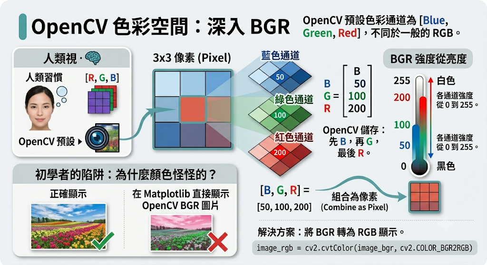
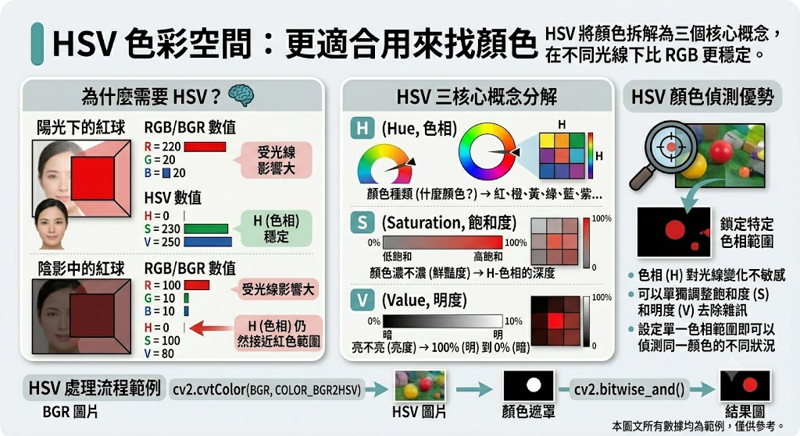

OpenCV¶
OpenCV 全名是 Open Source Computer Vision Library。
它是一套「電腦視覺」與「影像處理」的超主流函式庫。
簡單講：它讓程式可以「看懂畫面」。像是：
- 讀取圖片
- 操作影片
- 偵測人臉
- 找輪廓
- 辨識物件
- 做 AI 視覺前處理
- 即時攝影機分析
很多 AI 視覺專案，其實底層都會搭配 OpenCV。

安裝套件¶
影像是 NumPy 陣列¶
很多人剛接觸 OpenCV 時，會以為圖片是一個很神秘的東西。
但其實不是。
對電腦來說：圖片本質上就是一大堆數字。而 OpenCV 讀進來後，會把圖片變成 numpy.ndarray。

灰階圖片：電腦其實看不懂「圖片」，它只看得懂數字¶

我們人看到圖片時，會覺得這是一張照片、一個人、一隻貓，或是一個物品。
但電腦不是這樣看的。電腦看到圖片時，其實看到的是一堆數字。每一個數字，都代表圖片中某一個小格子的亮度。這個小格子，就叫做「像素」(pixel)。
假設現在有一張很小很小的黑白圖片，它只有 3 × 3 個像素。
電腦看到的內容可能長這樣：
這看起來不像圖片，對吧？ 但對電腦來說，這就是圖片。
每一個數字代表一個像素的亮度：
灰階圖片可以做什麼？¶
很多影像處理任務會先把圖片轉成灰階，因為灰階圖片比較簡單。
彩色圖片有紅、綠、藍三個通道。但灰階圖片只有一個亮度值。
資料變少了，電腦處理起來就更快，也更容易分析。
色彩空間¶
電腦其實有很多種「描述顏色的方法」，就像人類描述天氣：
- 有人說「很熱」
- 有人說「35度」
- 有人說「體感像烤箱」
都是同一件事。只是描述方式不同。而色彩空間也是這樣。
| 色彩空間 | 代表意思 | 資料格式 | 適合做什麼 | 初學者理解方式 |
|---|---|---|---|---|
| BGR | OpenCV 預設顏色格式 | [Blue, Green, Red] |
OpenCV 影像處理 | OpenCV 自己的顏色順序 |
| RGB | 一般世界常見格式 | [Red, Green, Blue] |
網頁、Pillow、Matplotlib | 人類比較熟悉的顏色順序 |
| GRAY | 灰階 | 0 ~ 255 |
邊緣、輪廓、OCR | 只有亮度，沒有顏色 |
| HSV | 用「顏色種類」分析 | [Hue, Saturation, Value] |
顏色偵測、顏色追蹤 | 比較容易「找顏色」 |

BGR：OpenCV預設看到的顏色¶
OpenCV 讀圖片時，預設格式是 BGR。
也就是每一個像素的順序是：[Blue, Green, Red]；不是我們平常習慣的：[Red, Green, Blue]
這也是很多初學者第一次用 Matplotlib 顯示 OpenCV 圖片時，顏色怪怪的原因。

HSV：更適合用來找顏色¶
HSV 是很重要的色彩空間。它把顏色拆成三個概念：
H = Hue，色相，也就是顏色種類 -> H：這是什麼顏色？紅色、黃色、綠色、藍色？
S = Saturation，飽和度，也就是顏色濃不濃 -> S：這個顏色鮮不鮮豔？
V = Value，明度，也就是亮不亮 -> V：這個顏色亮不亮？
為什麼 HSV 適合找顏色？
因為 RGB 或 BGR 會受到光線影響比較大。例如同一顆紅球：
用 RGB 看，數值可能差很多。但用 HSV 看，它們的 Hue 可能還是接近紅色範圍。所以做顏色偵測時，HSV 很常用。

繪圖與標註¶
OpenCV 可直接在圖片上畫線、矩形、圓、文字。這是做偵測結果視覺化的基礎。
常用函式：
cv2.linecv2.rectanglecv2.circle-
cv2.putText - 範例：畫矩形
- 範例：畫圓形+加文字
平滑、去雜訊與銳化¶
影像處理其實很像在修照片。
照片有時候會出現一些小問題：
| 問題 | 看起來像什麼 | 可以怎麼處理 |
|---|---|---|
| 雜訊 | 畫面有小顆粒、小黑點、小白點 | 平滑、模糊 |
| 邊緣太硬 | 畫面不自然、有鋸齒感 | 平滑 |
| 畫面太糊 | 細節不清楚 | 銳化 |
平滑¶
平滑可以先理解成：
- 讓圖片看起來比較柔和。
- 它會把附近像素的顏色「混在一起平均一下」。所以小雜訊會被淡化。
但缺點也很明顯：平滑太多，圖片會變糊。

銳化¶
銳化剛好相反。
平滑是讓畫面變柔。銳化是讓畫面變清楚。
它會讓邊緣、線條、輪廓更明顯。
| 原圖狀態 | 銳化後 |
|---|---|
| 文字有點糊 | 文字邊緣更清楚 |
| 物體輪廓不明顯 | 輪廓更突出 |
| 細節偏軟 | 細節變硬一點 |

閾值處理¶
閾值處理(Thresholding)，你可以把它想成：「幫圖片做二選一判斷。」例如：
- 太亮 → 變白色
- 太暗 → 變黑色
最後圖片通常只剩黑白兩種顏色。
常見方法：
- 固定閾值：
cv2.threshold - Otsu 自動閾值：適合雙峰分布
- 自適應閾值：適合光線不均

形態學¶
形態學(Morphology)，你可以把它想成：「修圖工具。」
但它修的不是漂亮。而是修：雜點、破洞、黏在一起的物件、太細的區域
形態學通常用在：黑白圖(binary image)也就是：
- 黑色背景
- 白色物件
例如：
- 白色 = 想保留的東西
- 黑色 = 背景
OpenCV 會一直對白色區域動手腳。

侵蝕(erosion)：¶
「把白色慢慢吃掉。」白色區域會變小。 用途很常是：
- 去除小白點雜訊
- 分離黏在一起的物件
膨脹 dilation¶
膨脹跟侵蝕相反。它會：「讓白色長大。」
用途：
- 補小裂縫
- 讓文字更粗
- 讓物件更完整
Opening 開運算¶
開運算：先侵蝕 → 再膨脹
很多學生第一次會問：「啊不是又縮小又放大？」
其實重點是：小雜點通常在侵蝕時就直接消失了。後面再膨脹也回不來。所以效果會像：「清除小白點。」
Closing 閉運算¶
閉運算：先膨脹 → 再侵蝕
這次目的變成：「補洞。」
因為膨脹時：小黑洞可能先被填滿。後面侵蝕時，洞已經消失了。
邊緣偵測(Edge Detection)¶
想像一張圖片：
白色區域 黑色區域
255 255 255 | 0 0 0
255 255 255 | 0 0 0
255 255 255 | 0 0 0
# 左邊很亮(255)，右邊很暗(0)，中間差距非常大：255 → 0
# 電腦就會認為：這裡可能有邊緣
所以邊緣其實就是：像素亮度突然改變的地方。
輪廓偵測(Contours)¶
當我們看到一張圖片時，可以很自然地知道：
- 哪裡有一顆球
- 哪裡有一張桌子
- 哪裡有一隻貓
但電腦其實不知道。對電腦來說，圖片只是一堆數字。
所以如果想讓電腦知道：
就需要用到輪廓偵測 (Contour Detection)。輪廓偵測流程如下：
影片與攝影機¶
OpenCV 可讀影片檔或 webcam：
- 記得
cap.release() - 迴圈中要處理按鍵中斷
- 影片輸出要設定 codec、fps、大小
影像特效¶
模板比對(Template Matching)¶
想像一下，你在玩「大家來找碴」。
老師給你一張大圖片。桌上有：
然後再給你一張小圖片：滑鼠
你的任務是在大圖片中找到滑鼠的位置
人類通常一眼就能找到。但電腦不知道什麼是滑鼠。它只能一個位置、一個位置慢慢比對：
- 這裡像不像？
- 這裡像不像？
- 這裡像不像？
直到找到最相似的位置。
這種方法就叫做：Template Matching模板比對。

動態偵測¶
動態偵測可以用背景差分：
- 前後影格相減
- 背景模型：
cv2.createBackgroundSubtractorMOG2 - 找出變動區域輪廓
應用：
- 監視器移動偵測
- 流量偵測
- 簡易安全警報

文件掃描(Document Scanner)¶

背景去除¶

- 範例：Webcam背景變黑
- 範例：Webcam更換背景顏色人物保留，背景變成藍色。
- 範例：Webcam背景模糊，這個最像手機人像模式。
基於 YuNet 即時人臉偵測(Face Detection)¶
OpenCV 除了傳統 Haar Cascade，也支援較新的 YuNet 人臉偵測模型。
YuNet 比 Haar 更適合 webcam 即時應用，對光線、角度與多人畫面的穩定度也更好，很適合拿來做 AI 視覺入門專題。
- YuNet 是 OpenCV 較新的輕量人臉偵測方案，比 Haar Cascade 更適合即時 webcam 應用
- YuNet 負責「找出臉在哪裡」，不是辨識「這個人是誰」
- 若要做人臉辨識，可以把 YuNet 偵測到的臉部區域，再交給 DeepFace、InsightFace 或 face_recognition 處理

- 範例：基於YuNet做Webcam即時人數統計
- 範例：基於YuNet做Webcam即時人臉追蹤
- 範例：基於YuNet做Webcam即時自動拍照
- 範例：基於YuNet做Webcam即時臉部裁切
- 範例：基於YuNet做Webcam即時背景模糊
基於 SFace 即時人臉辨識(Face Recognition)¶
前面的 YuNet負責的是人臉偵測(Face Detection)
SFace 是 OpenCV 支援的人臉辨識模型。它本質上是一個：
- 深度學習(DNN)
- Face Embedding
- 特徵向量模型
SFace 的流程如下：

Cosine Similarity 是什麼？¶
SFace 很常使用餘弦相似度(Cosine Similarity)判斷兩張臉有多像。
| 分數 | 意思 |
|---|---|
| 越接近 1 | 越像 |
| 越接近 0 | 越不像 |
| 相似度 | 結果 |
|---|---|
| 0.92 | 很可能同一人 |
| 0.55 | 不太像 |
| 0.20 | 幾乎不同人 |
- 範例：基於SFace做人臉相似度分析
- 請先用手機找好一張朱大哥找片
- 下面這兩個模型手動下載好，放到OpenCV_datasets資料夾：
- 範例：基於SFace做人臉辨識系統
OpenCV + Gemini¶
OpenCV+Gemini美食分析¶
使用者可以上傳一張食物照片，程式會：
1. 使用 OpenCV 讀取圖片
2. 自動壓縮圖片，避免圖片太大
3. 將圖片送給 Gemini 分析
4. 回傳食物名稱、熱量估計、蛋白質來源、減脂建議
5. 使用 Gradio 做成簡單網頁介面